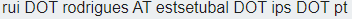
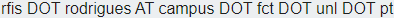
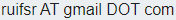

Contacts WEBSITES Linkedin Research Gate Google scholar Perfil Est Setubal IPS Email Addresses    Addresses Escola Superior de Tecnologia, Campus do IPS - Estefanilha, 2910-761, Setúbal , Portugal Faculdade de Ciências e Tecnologia, Universidade Nova de Lisboa, Quinta da Torre, Caparica, Portugal
 Linkedin
Linkedin